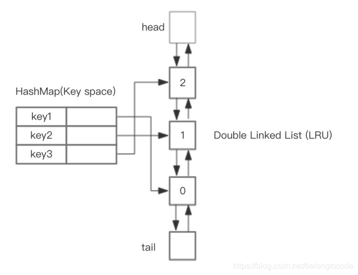

[toc]
前言
LRU算法全称是最少最近使用算法（Least Recently Use），广泛的应用于缓存机制中。当缓存使用的空间达到上限后，就需要从已有的数据中淘汰一部分以维持缓存的可用性，而淘汰数据的选择就是通过LRU算法完成的。
LRU算法的基本思想是基于局部性原理的时间局部性：
如果一个信息项正在被访问，那么在近期它很可能还会被再次访问。
所以顾名思义，LRU算法会选出最近最少使用的数据进行淘汰。
原理
一般来讲，LRU将访问数据的顺序或时间和数据本身维护在一个容器当中。当访问一个数据时：
该数据不在容器当中，则设置该数据的优先级为最高并放入容器中。该数据在容器当中，则更新该数据的优先级至最高。当数据的总量达到上限后，则移除容器中优先级最低的数据。下图是一个简单的LRU原理示意图：

如果我们按照7 0 1 2 0 3 0 4的顺序来访问数据，且数据的总量上限为3，则如上图所示，LRU算法会依次淘汰7 1 2这三个数据。
由图感觉, 没有体现出最少的概念, 更贴切的描述应该是: 最近使用算法,
朴素的LRU算法
那么我们现在就按照上面的原理，实现一个朴素的LRU算法。下面有三种方案：
基于数组
方案：为每一个数据附加一个额外的属性——时间戳，当每一次访问数据时，更新该数据的时间戳至当前时间。当数据空间已满后，则扫描整个数组，淘汰时间戳最小的数据。
不足：维护时间戳需要耗费额外的空间，淘汰数据时需要扫描整个数组。
基于长度有限的双向链表
方案：访问一个数据时，当数据不在链表中，则将数据插入至链表头部，如果在链表中，则将该数据移至链表头部。当数据空间已满后，则淘汰链表最末尾的数据。
不足：插入数据或取数据时，需要扫描整个链表。
基于双向链表和哈希表
方案：为了改进上面需要扫描链表的缺陷，配合哈希表，将数据和链表中的节点形成映射，HashMap 存储 key，这样可以做到 save 和 get key的时间都是 O(1) , 而 HashMap 的 Value 指向双向链表实现的 LRU 的 Node 节点，如图所示。
重点是hash表, 以hash表为维度操作

基于LinkedHashMap实现的LRU
JDK给我们提供的LinkedHashMap直接实现LRU。因为LinkedHashMap的底层即为双向链表和哈希表的组合，所以可以直接拿来使用。
public class LRUCache extends LinkedHashMap {
private int capacity;
public LRUCache(int capacity) {
// true表示 访问的顺序 ， false表示插入的顺序
// 注意这里将LinkedHashMap的accessOrder设为true
super(16, 0.75f, true);
this.capacity = capacity;
}
@Override
protected boolean removeEldestEntry(Map.Entry eldest) {
return super.size() > capacity;
}
}
默认LinkedHashMap并不会淘汰数据，所以我们重写了它的removeEldestEntry()方法，当数据数量达到预设上限后，淘汰数据，accessOrder设为true意为按照访问的顺序排序。整个实现的代码量并不大，主要都是应用LinkedHashMap的特性。
正因为LinkedHashMap这么好用，所以我们可以看到Dubbo的LRU缓存LRUCache也是基于它实现的。
LRU算法优化
朴素的LRU算法已经能够满足缓存的要求了，但是还是有一些不足。当热点数据较多时，有较高的命中率，但是如果有偶发性的批量操作，会使得热点数据被非热点数据挤出容器，使得缓存受到了“污染”。所以为了消除这种影响，又衍生出了下面这些优化方法。
LRU-K
LRU-K算法是对LRU算法的改进，将原先进入缓存队列的评判标准从访问一次改为访问K次，可以说朴素的LRU算法为LRU-1。
LRU-K算法有两个队列，一个是缓存队列，一个是数据访问历史队列。当访问一个数据时，首先先在访问历史队列中累加访问次数，当历史访问记录超过K次后，才将数据缓存至缓存队列，从而避免缓存队列被污染。同时访问历史队列中的数据可以按照LRU的规则进行淘汰。具体如下图所示：

实现一个LRU-K缓存
// 直接继承我们前面写好的LRUCache
public class LRUKCache extends LRUCache {
private int k; // 进入缓存队列的评判标准
private LRUCache historyList; // 访问数据历史记录
public LRUKCache(int cacheSize, int historyCapacity, int k) {
super(cacheSize);
this.k = k;
this.historyList = new LRUCache(historyCapacity);
}
@Override
public Integer get(Integer key) {
// 记录数据访问次数
Integer historyCount = historyList.get(key);
historyCount = historyCount == null ? 0 : historyCount;
historyList.put(key, ++historyCount);
return super.get(key);
}
@Override
public Integer put(Integer key, Integer value) {
if (value == null) {
return null;
}
// 如果已经在缓存里则直接返回缓存中的数据
if (super.get(key) != null) {
return super.put(key, value);;
}
// 如果数据历史访问次数达到上限，则加入缓存
Integer historyCount = historyList.get(key);
historyCount = historyCount == null ? 0 : historyCount;
if (historyCount >= k) {
// 移除历史访问记录
historyList.remove(key);
return super.put(key, value);
}
}
}
上面只是个简单的模型，并没有加上必要的并发控制。
一般来讲，当K的值越大，则缓存的命中率越高，但是也会使得缓存难以被淘汰。综合来说，使用LRU-2的性能最优。
redis中的LRU算法
redis没有使用标准的LRU算法, 只是近似的LRU算法, 因为嫌LinkedList占用的空间太大了
redis通过计算每个key的闲置时间来决定是否要选它淘汰(全局时钟 减去 当前key的访问时钟), redis会随机选几个key, 它们的闲置时间都要大于一个阈值(其实会存入一个pool, 这个阈值就是pool中最小的闲置时间), 当内存不够时, 就从这几个key中淘汰闲置时间最大的值
Redis的缓存淘汰策略LRU与LFU - 简书 (jianshu.com)
更多可见: Redis的淘汰策略LRU与LFU.md